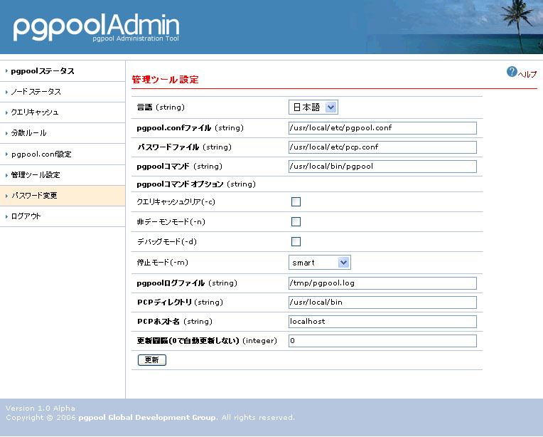

管理ツール設定
概要
pgpool管理ツールの設定を表示・変更することができます。
機能
| (string) | 表示したい言語を選択します。「auto」を選択した場合には、ブラウザで設定した言語が優先的に表示されます。 |
|---|---|
| (string) | pgpool.confへのパスをフルパスで指定します。 |
| (string) | pcp.confへのパスをフルパスで指定します。 |
| (string) | pgpoolへのパスをフルパスで指定します。 |
| (string) | |
| クエリキャッシュクリア(-c) | 起動時にクエリキャッシュをクリアします。 |
| 非デーモンモード(-n) | 非デーモンモードでpgpoolを起動します。pgpoolのログを管理ツールで表示するには、この項目をオンにする必要があります。 |
| デバッグモード(-d) | デバッグモードで起動します。デバッグログが必要な場合にはオンにします。 |
| 停止モード(-m) | pgpoolのすべてのプロセスを終了します。pgpool停止ボタンを押すと、終了オプションが表示されます。停止モードとして
|
| pgpool.conf(-f) | pgpoolの起動時に指定するpgpool.confです。pgpool.confのパスは「pgpool.confファイル」で指定した値になります。 |
| pcp.conf(-F) | pgpoolの起動時に指定するpcp.confです。pgpool.confのパスは「パスワードファイル」で指定した値になります。 |
| (string) | 非デーモンモードで起動した場合に使用するログファイルかパイプ先を指定します。ログファイルを指定する場合はフルパスで記述します。パイプ先を指定する場合はバー（"|"）から記述してください。空欄の場合に非デーモンモードで起動した場合はpgpool.confのlogdirで指定してあるパスにpgpool.logというファイル名でログを作成します。 |
| (string) | PCPコマンドがインストールしてあるディレクトリを指定します。 |
| (string) | PCPコマンドがインストールしてあるディレクトリを指定します。 |
| (string) | PCPコマンドを実行するホスト名を指定します。通常は「localhost」になります。 |
| (integer) | ステータスの更新間隔を秒単位で指定します。0を指定した場合には自動更新しません。 |
最後に更新ボタンを押して更新します。